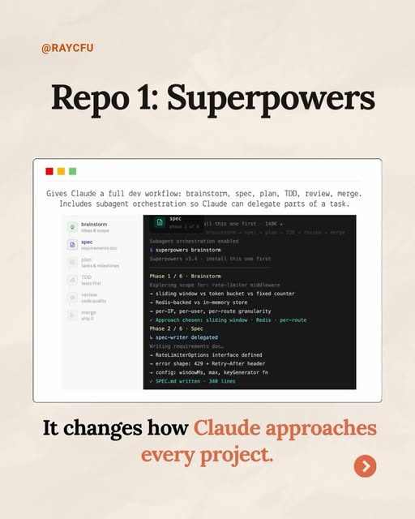
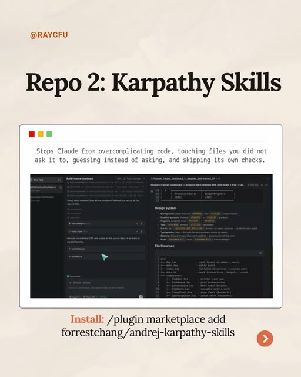
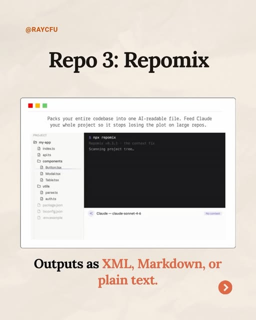
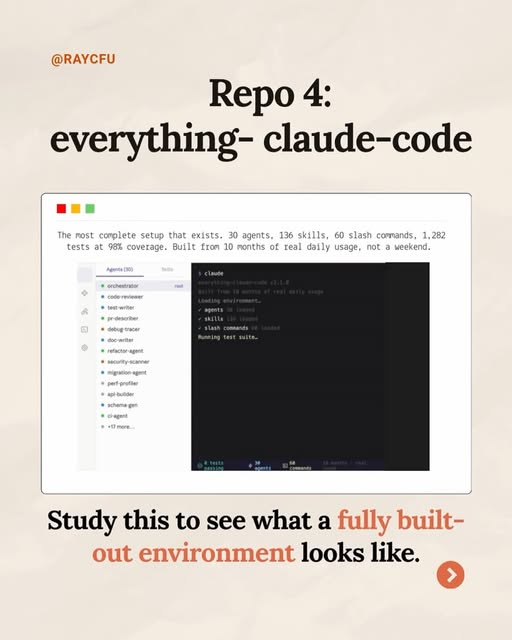
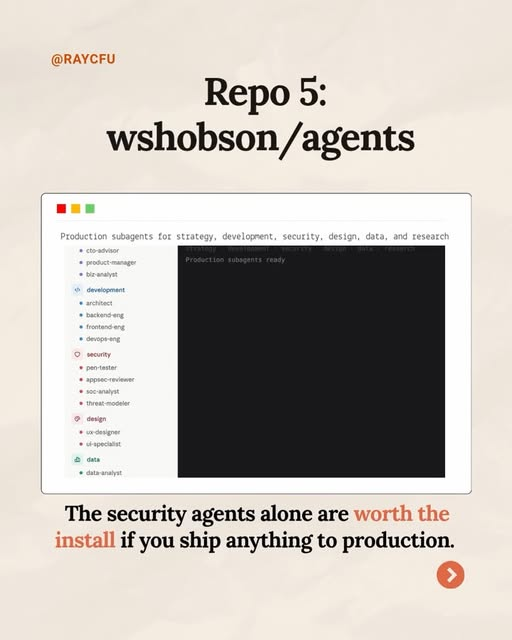
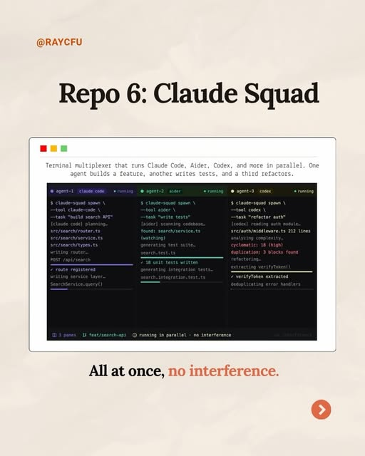
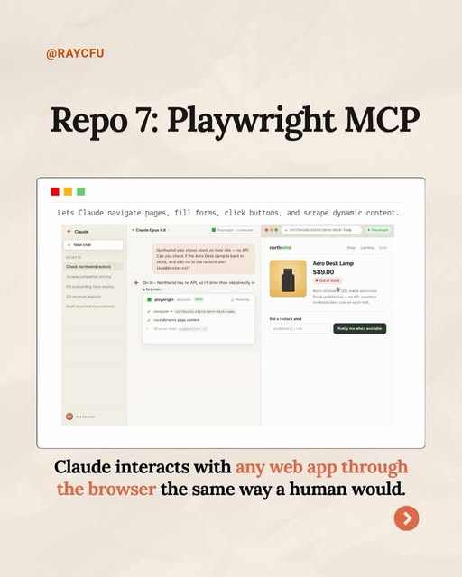
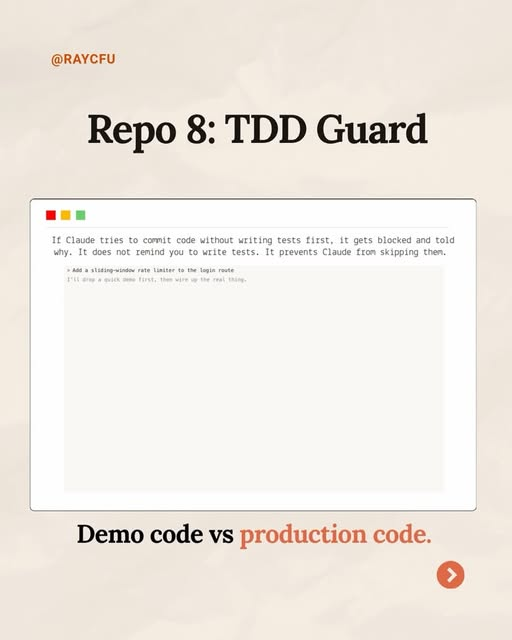
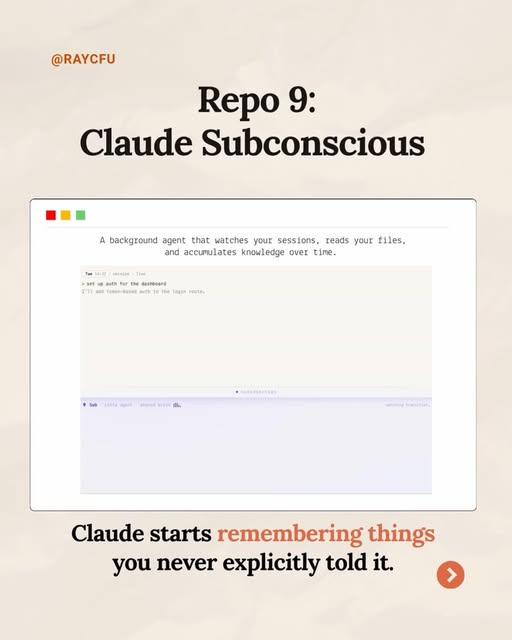
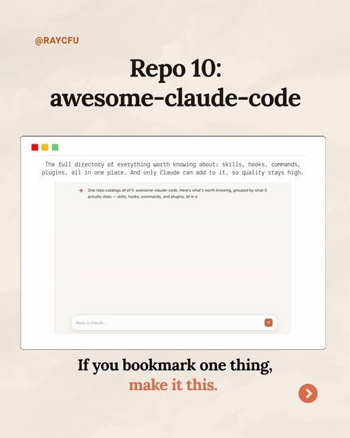

Instagram Post

Repo 1: Superpowers Gives Claude a full dev...
carousel (10 slides) (enriched by ClaudeClaw)
Summary
Repo 1: Superpowers Gives Claude a full dev workflow: bra... | 10 Claude GitHub Repos that Actually Matter i can do mark... | Repo 3: Repomix Packs your entire codebase into one AI-re... | Repo 4: everything- claude-code The most complete setup t... | Repo 3: Repomix Packs your entire codebase into one AI-re... | Repo 4: everything- claude-code The most complete setup t... | Repo 7: Playwright ...
1
@RAYCFU Repo 1: Superpowers Gives Claude a full dev workflow: brainstorm, spec, plan, TDD, review, merge. Includes subagent orchestration so Claude can delegate parts of a task. brainstorm ideas & scope spec requirements doc plan tasks & milestones TDD tests first review code quality merge ship
2
@RAYCFU 10 Claude GitHub Repos that Actually Matter i can do marketing i can do research SWIPE TO LEARN >
The image features a title about "10 Claude GitHub Repos that Actually Matter" above two pixel-art style characters, one a red figure with glasses holding a document and saying "i can do marketing", and the other a stack of folders saying "i can do research", with a "SWIPE TO LEARN" button at the bottom.
3
@RAYCFU Repo 3: Repomix Packs your entire codebase into one AI-readable file. Feed Claude your whole project so it stops losing the plot on large repos. PROJECT my-app index.ts api.ts components Button.tsx Modal.tsx Table.tsx utils parsers auth.ts package.json tsconfig.json env.example $ npx repomix Repomix v0.3.1 - the context fix Scanning project tree... Claude - claude-sonnet-4-6 No context Outputs as XML, Markdown, or plain text.
A digital slide with a light brown background displays a white window resembling a code editor, showing a file directory and terminal output, with text above and below describing a tool called Repomix.
4
@RAYCFU Repo 4: everything- claude-code The most complete setup that exists. 30 agents, 136 skills, 60 slash commands, 1,282 tests at 98% coverage. Built from 10 months of real daily usage, not a weekend. Agents (30) orchestrator code-reviewer test-writer bug-fixer debug-tracer doc-writer refactor-agent security-scanner migration-agent perf-profiler api-builder schema-gen UI-agent +17 more... $ claude everything-claude-code v1.1.0 Built from 10 months of real daily usage Loading environment... ✓ agents 30 loaded ✓ skills 136 loaded ✓ slash commands 60 loaded Running test suite... 8 tests passing 30 agents 136 skills 60 commands 10 months 1,282 tests Study this to see what a fully built-out environment looks like.
A social media post displays a screenshot of a code editor or IDE, showing a list of agents and a terminal output, with text overlays about a "Repo 4: everything-claude-code" and a call to action to study the environment.
5
@RAYCFU Repo 3: Repomix Packs your entire codebase into one AI-readable file. Feed Claude your whole project so it stops losing the plot on large repos. PROJECT my-app index.ts api.ts components Button.tsx Modal.tsx Table.tsx utils parsers auth.ts package.json tsconfig.json env.example $ npx repomix Repomix v0.3.1 - the context fix Scanning project tree... Claude - claude-sonnet-4-6 No context Outputs as XML, Markdown, or plain text.
A digital slide with a light brown background displays a white window resembling a code editor, showing a file directory and terminal output, with text above and below describing a tool called Repomix.
6
@RAYCFU Repo 4: everything- claude-code The most complete setup that exists. 30 agents, 136 skills, 60 slash commands, 1,282 tests at 98% coverage. Built from 10 months of real daily usage, not a weekend. Agents (30) orchestrator code-reviewer test-writer bug-fixer debug-tracer doc-writer refactor-agent security-scanner migration-agent perf-profiler api-builder schema-gen UI-agent +17 more... $ claude everything-claude-code v1.1.0 Built from 10 months of real daily usage Loading environment... ✓ agents 30 loaded ✓ skills 136 loaded ✓ slash commands 60 loaded Running test suite... 8 tests passing 30 agents 136 skills 60 commands 10 months 1,282 tests Study this to see what a fully built-out environment looks like.
A social media post displays a screenshot of a code editor or IDE, showing a list of agents and a terminal output, with text overlays about a "Repo 4: everything-claude-code" and a call to action to study the environment.
7
@RAYCFU Repo 7: Playwright MCP Lets Claude navigate pages, fill forms, click buttons, and scrape dynamic content. Claude Claude Opus 4.0 Playwright connected
8
@RAYCFU Repo 6: Claude Squad Terminal multiplexer that runs Claude Code, Aider, Codex, and more in parallel. One agent builds a feature, another writes tests, and a third refactors. agent-1 claude code running agent-2 aider running agent-3 codex running $ claude-squad spawn \ --tool claude-code \ --task "build search API" [claude code] planning... src/search/router.ts src/search/service.ts src/search/types.ts writing router... POST /api/search ✓ route registered writing service layer... SearchService.query() $ claude-squad spawn \ --tool aider \ --task "write tests" [aider] scanning codebase... found: search/service.ts (watching) generating test suite... search.test.ts ✓ 18 unit tests written generating integration tests... search.integration.test.ts $ claude-squad spawn \ --tool codex \ --task "refactor auth" [codex] reading auth module... src/auth/middleware.ts 212 lines analyzing complexity... cyclomatic: 18 (high) duplication: 3 blocks found refactoring... extracting verifyToken() ✓ verifyToken extracted deduplicating error handlers 3 panes feat/search-api running in parallel - no interference All at once, no interference.
A digital slide or infographic displays a title "Repo 6: Claude Squad" and a terminal window showing three parallel code execution processes, with additional text below.
9
@RAYCFU Repo 7: Playwright MCP Lets Claude navigate pages, fill forms, click buttons, and scrape dynamic content. Claude New chat RECENT Check Northwind restock Scrape competitor pricing HR onboarding flow w/playw Q3 revenue analysis Draft launch announcement Claude Opus 4.0 Northwind only shows stock on their site - no API. Can you check if the Aero Desk Lamp is back in stock, and add me to the restock alert (joel@anthropic.com)? On it - Northwind has no API, so I'll drive their site directly in a browser. playwright Running northwind.com/aero-desk-lamp northwind Shop Lighting Cart Aero Desk Lamp $89.00 Out of stock Warm-dimming LED, matte aluminum. Stock updates (say - no API, inventory Get a restock alert joel@anthropic.com Notify me when available Claude interacts
10
@RAYCFU Repo 10: awesome-claude-code The full directory of everything worth knowing about: skills, hooks, commands, plugins, all in one place. And only Claude can add to it. so quality stays high. + One repo catalogs all of it: awesome-claude-code. Here's what's worth knowing, grouped by what it actually does - skills, hooks, commands, and plugins, all in o Reply to Claude... If you bookmark one thing, make it this.
A social media post displays a white browser-like window with text content about "awesome-claude-code" against a light beige background, with an orange arrow icon in the bottom right.
All slides








